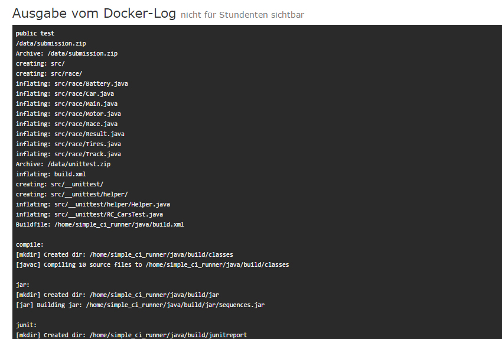

How to handle the assignment submissions from 400 students each week?
During the term 2016 we were responsible for the computer science class "Informatik 2" at University of Tübingen. The course contained mandatory exercise sheets each single week. But letting the students upload their assignment submissions is not enought. The important questions is: How to make the grading procedure each week more easy, more fast and more fair?
Self-hosted Online Service for managing the submission files, exercise sheets and earned points.
A quick look revealed the disillusioning situation. There was no solution tailored exactly to our use-case. Therefore our system InfoMark was written from scratch to provide the students a nice learning experience, to reduce our workload and simplify the time-consuming work of tutors during the grading phase.
The system should be:
- reliable: We like backups, but not the restoring procedure.
- helpful: We would like to reduce the workload and not increase it.
- nice UI: If we use a system, we should like or even love to use it.
- without any setup: For any local tests, we use docker-compose to setup the environment
Test assignment submissions
You can think of InfoMark as a combination of GitHub with Jenkins CI for the everyday life at university.
If we could automatically test an assignment submission can be compiled and runs like expected; then the students would be confident about their uploaded solution and the tutors can check the code instead of fighting against compiler issues. Each upload as a zip-file is enqueued in our testing-pipeline. Using Resque, Redis and Docker the assignment submission is automatically tested in a sandbox environment if ressources are available. The students get the result of our tailored public tests. The tutors get the docker-log as well as additional informations from the private tests. Running tests on a malicious submission in a Docker sandbox let only the Docker process die. This provides each student a learning experience by fixing their code right before the deadline. Missunderstandings of the exercise task are not possible anymore.
We allowed the students to upload, upload, upload and upload and upload ... you get the point ... their solutions multiple times. Because of using public and private tests, there will be no overfitting to our random private tests. From our experience, students used this opportunity to check their solutions on their own and deal with their code until it's fine. It is important to help the students to figure out on their own to fix any issue with their code. So we just tell them, where they fail. And they will try to fix it.
The individual sandbox environment just returns an xml report. So you can test everything: Python, Java, C++, ... It is just a bash script which runs in a docker container with restricted permissions and without internet access.
Make the life of a tutor easier
After the deadline for an exercise sheet all valid assignment submissions were collected and compressed to a single zip file into a standard directory structure renaming all directories with convenient names. A tutor might download all relevant files by a single click or directly add comments to the code on the webpage. The system allows inline comments at the code. It is as easy as commenting code on GitHub.
And it just works
Using Ruby on Rails has serveral advantages as SQL injection protection, easy database queries from the console, zero-downtime deploys using Capistrano and multiple data formats as json or csv. In fact, we developed the system over the term and add new features. Deploying new features using Capistrano were done during the day on our production server without any issues or database corruption.
We did not notice any performance issues. But for safety we use background workers for updating a cache of the earned points for the exercise sheets, testing submissions, sending mails or zipping files.
Nobody noticed that we were updating the production system.
Everything in one place
Extra course material or the slides can be uploaded directly on the site. Choosing a minimum amount of points to approve students to the exam, will let the system to filter out those and add a notification on their dashboard.